The Last Mile: Mapping NYC's Delivery Pressure Points
A step by step guide for the SDSC 2026 New York workshop. You will go from three open datasets to a scored map with an AI agent, using CARTO Workflows and Builder.
About 60 minutesIntro levelNo installFree trial is enough
What you will build
A score from 0 to 100 for 10 NYPD precincts in Manhattan below 60th Street. A high score means delivery trucks collect many parking tickets while legal loading zones are scarce.
1. Workflow
Load three datasets, count tickets and loading zones per precinct, rate each precinct per 1,000 residents.
2. Map
Open the Builder map the workflow creates and style it so the pressure points stand out.
3. AI agent
Add an agent to the map and ask questions about the precincts in plain English.
Same data, same map, same result. You choose how much of the workflow you build yourself. You can switch at any time: the guide changes with you and your ticks are kept.
Core track. New to workflows? Start here. The facilitator guides the room through the last three nodes: the score, the join and the map.
Challenge track. Comfortable with workflows, or want to build more? You also build the joins and the per 1,000 rates yourself (8 nodes in total). The settings are in step 3. If you run out of time, import the complete file and carry on from step 5.
Requirements
Everything runs in the browser, inside the CARTO Data Warehouse that comes with every account. Nothing to install, no connections to configure.
You need
Details
A CARTO account
Free trial at app.carto.com. The help desk can set one up if you do not have it.
CARTO AI turned on
An admin of your org (in a new trial, that is you) must switch it on. Needed for the agent in step 6. See step 0.
The workflow files
Two .sql files: the one for your track and the complete one as a safety net. They are also in the workflow folder of this repo. Step 0 shows how to get them.
A modern browser
Chrome, Edge, Firefox or Safari, and an internet connection.
About 60 minutes
The first workflow run takes about 2 minutes. You do not need any SQL or coding knowledge.
Tip. Your progress is saved in this browser. Tick the boxes as you go and the bar at the top shows how far you are.
0
Set up your account
5 min
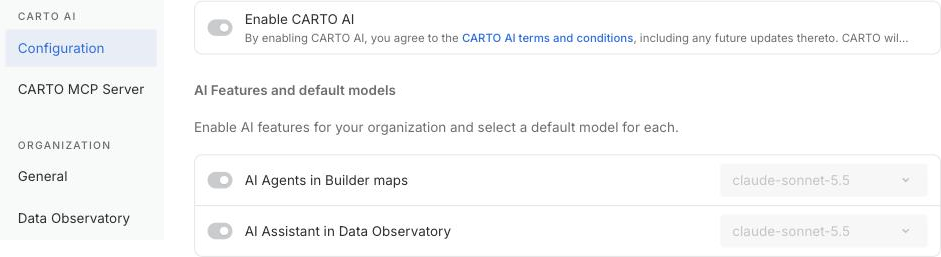
Settings, CARTO AI, Configuration. Both switches must be on.
If your browser asks whether to keep the file, choose Keep. The file must end in .sql (some browsers add .txt; rename it if so).
You should seeTwo files named 1_last_mile_START_HERE.sql and 2_last_mile_COMPLETE.sql in your Downloads folder. Use START_HERE for the workshop. COMPLETE is your safety net.Two files named 3_last_mile_CHALLENGE.sql and 2_last_mile_COMPLETE.sql in your Downloads folder. Use CHALLENGE for the workshop. COMPLETE is your safety net.
1
Import the starter workflow
3 min
A workflow is a visual canvas where each box is one step of an analysis.
The starter file already contains the first half of the analysis.The challenge file already loads and measures the data (stages 1 and 2). You build the rest.
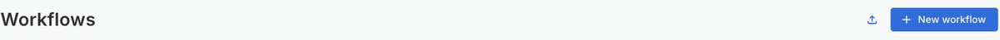
The import icon sits next to the New workflow button.
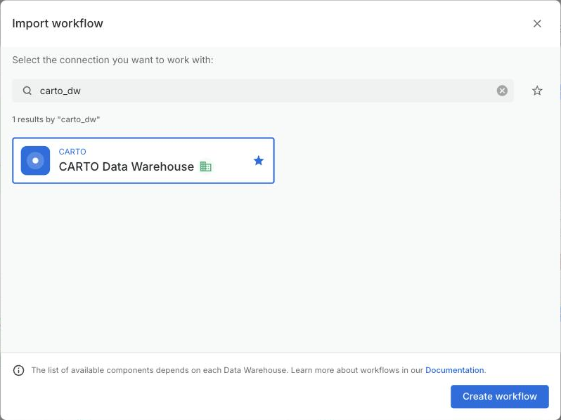
Pick CARTO Data Warehouse and press Create workflow.
You should seeA canvas with four colored panels: 1 Load (yellow), 2 Measure (blue), 3 Combine and rate (green) and an empty purple panel called Your turn.
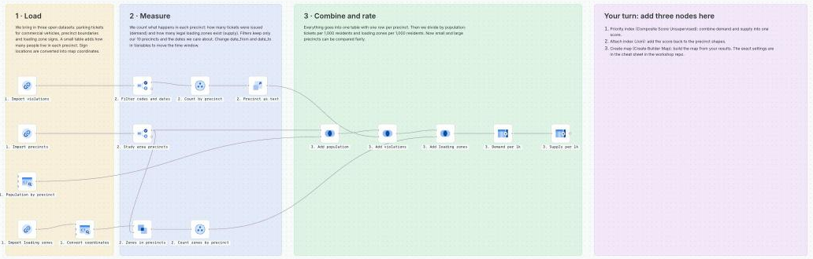
The starter workflow. The purple panel is where you add three nodes in step 3.
You should seeA canvas with two stage panels, 1 Load (yellow) and 2 Measure (blue), and a big empty purple panel called Your challenge.
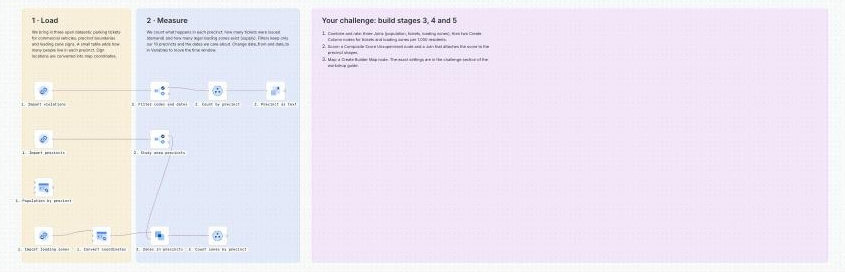
The challenge workflow. The purple panel is where you build stages 3, 4 and 5 in step 3.
The imported workflow is named after the file, so it will be called 1_last_mile_START_HERE3_last_mile_CHALLENGE.
2
Run it and read the canvas
3 min
Stage
What happens
1 Load
Three open datasets are imported: parking tickets for commercial vehicles, precinct boundaries, and loading zone signs. A small table adds how many people live in each precinct.
2 Measure
Count tickets per precinct (demand) and legal loading zones per precinct (supply). Filters keep only the 10 study precincts and the dates in the Variables.
3 Combine and rate
Everything goes into one table with one row per precinct, then tickets and loading zones are divided by population, per 1,000 residents.
3 to 5
Not there yet: you build them in step 3. They combine the tables, score each precinct and create the map.
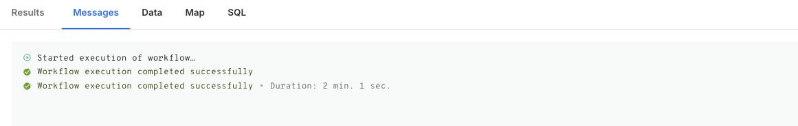
The Messages tab confirms the run finished.
You should seeGreen check marks on the nodes and a success message. A first run takes about 2 minutes. If it takes longer than 5 minutes, see If you get stuck.
Do not press Stop and Run again while it is working. Stacked runs only make it slower.
3
Finish the workflow: three nodes
Build stages 3, 4 and 5: eight nodes
10 min25 min
Now you add the last three nodes, inside the purple Your turn panel. To add a node, open the Components tab on the left, search for it by name, drag it onto the canvas, and connect its input to the output of the previous node. Double click a node title to rename it.
You build the rest of the workflow inside the big purple Your challenge panel: eight nodes in three stages. To add a node, open the Components tab on the left, search for it by name, drag it onto the canvas, and connect its inputs to the outputs of the upstream nodes. Double click a node title to rename it. The upstream nodes you need are already on the canvas.
Node on the canvas
What it gives you
2. Study area precincts
the 10 precinct shapes (precinct, geom)
1. Population by precinct
residents per precinct (precinct, population)
2. Precinct as text
tickets per precinct (violation_precinct, violations_sum)
2. Count zones by precinct
loading zones per precinct (precinct, order_number_count)
1. Convert coordinates
the loading zone points (used again for the map)
Stage 3: Combine and rate (5 nodes)
Three Joins put everything into one table with one row per precinct. Two Create Column nodes then divide by population, so small and large precincts can be compared fairly. Every Join uses the join type Left, so a precinct is never dropped.
Node 1: Join, called 3. Add population
Setting
Value
Left table
output of 2. Study area precincts
Right table
output of 1. Population by precinct
Key column in left table
precinct
Key column in right table
precinct
Join type
Left
Left table columns to keep
precinct, geom
Right table columns to keep
population
Node 2: Join, called 3. Add violations
Setting
Value
Left table
output of 3. Add population
Right table
output of 2. Precinct as text
Key column in left table
precinct
Key column in right table
violation_precinct (the name differs from the left key)
Join type
Left
Left table columns to keep
precinct, geom, population
Right table columns to keep
violations_sum, renamed to violations
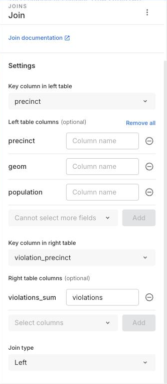
The second Join. The right key is violation_precinct and violations_sum is renamed to violations.
Node 3: Join, called 3. Add loading zones
Setting
Value
Left table
output of 3. Add violations
Right table
output of 2. Count zones by precinct
Key column in left table
precinct
Key column in right table
precinct
Join type
Left
Left table columns to keep
precinct, geom, population, violations
Right table columns to keep
order_number_count, renamed to loading_supply
Node 4: Create Column, called 3. Demand per 1k
Tickets per 1,000 residents, the demand for curb space.
Setting
Value
Input
output of 3. Add loading zones
Name for new column
demand_per_1k
Expression
violations / population * 1000
Node 5: Create Column, called 3. Supply per 1k
Loading zones per 1,000 residents, the supply of curb space. COALESCE turns a missing value into 0, for a precinct with no loading zones at all.
Setting
Value
Input
output of 3. Demand per 1k
Name for new column
loading_per_1k
Expression
COALESCE(loading_supply, 0) / population * 1000
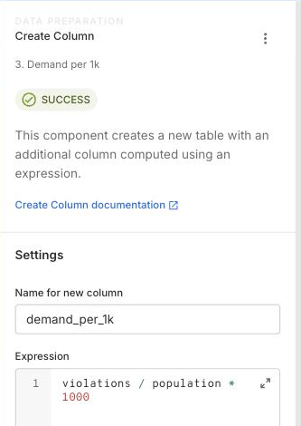
Create Column for demand_per_1k.
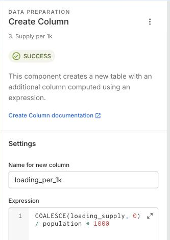
Create Column for loading_per_1k.
You should see10 rows, one per precinct, with the columns precinct, geom, population, violations, loading_supply, demand_per_1k and loading_per_1k. For example, precinct 14 has 196 loading zones and precinct 13 has 71.
If a column is empty, check the key columns of the Joins. The second Join is the tricky one: the right key is violation_precinct, not precinct.
Stages 4 and 5: Score and Map (3 nodes)
These are the same three nodes the core track adds. Their settings are below, as nodes 6, 7 and 8.
Predict first. Which precinct do you think will rank number one for delivery pressure? Write it down before you run.
Node 16: Composite Score Unsupervised, called 3. Priority index
This node turns several measurements into one 0 to 100 score. Search the Components tab for composite score and connect it after 3. Supply per 1k.
Setting
Value
Input
output of 3. Supply per 1k
Scoring method
CUSTOM_WEIGHTS
Weights
demand_per_1k = 1, left on Direct loading_per_1k = 1, switched to Inverse (click the arrow next to it) population, violations and loading_supply = 0
Scaling function
MIN_MAX_SCALER
Aggregation function
LINEAR
Output formatting
RETURN_RANGE, from 0 to 100
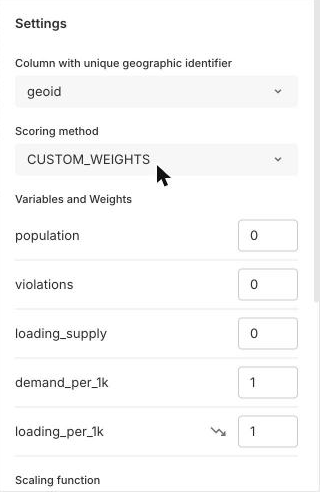
Scoring method and weights. Yours will show weight 1 on every column until you change them.
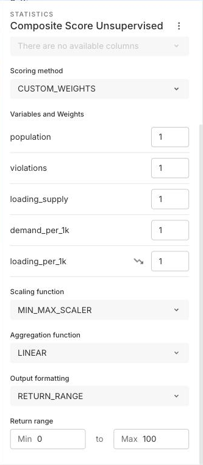
Scaling, aggregation and return range.
Why Inverse? More loading zones per resident means less pressure, so that variable has to push the score down. Direct means a higher value raises the score. Inverse means a higher value lowers it.
The column list only appears after the previous nodes have run, so run the workflow before you configure this node. If you forget to zero the other three columns, the ranking changes.
Node 27: Join, called 3. Attach index
The score table has no shapes. This node adds the score back onto the precinct polygons.
The Join settings. Note the rename of spatial_score to priority_index.
Node 38: Create Builder Map, called 4. Create map
Setting
Value
Sources
connect two nodes: 3. Attach index (precincts with the score) and 1. Convert coordinates (the loading zone points)
Map name
The Last Mile: NYC Delivery Pressure
Re-running mode
Update
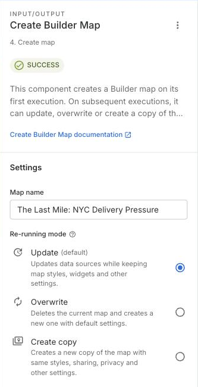
Create Builder Map. Update keeps your styles when you run again.
Check your result
Select 3. Attach index and open the Data tab at the bottom.
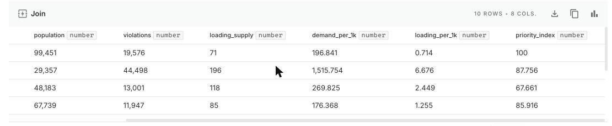
Ten rows, one per precinct, with the shapes and the new priority_index column.
You should see
10 rows. Sorted by priority_index, the ranking should be:
Precinct
13
14
7
9
6
10
18
17
1
5
priority_index
100
87.8
87.8
85.9
85.1
67.7
47.0
45.9
18.5
0
If your numbers differ, check that precinct is the key column and that loading_per_1k is set to Inverse.
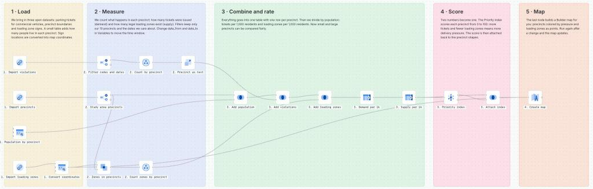
The finished workflow, as in COMPLETE.sql.
4
Try two experiments
5 min
This is where a workflow pays off: change one setting, run again, and the whole chain updates.
Short on time? Skip this step and come back to it after the workshop. The map in step 5 works with either result.
5
Style the map
10 min
Before and after:
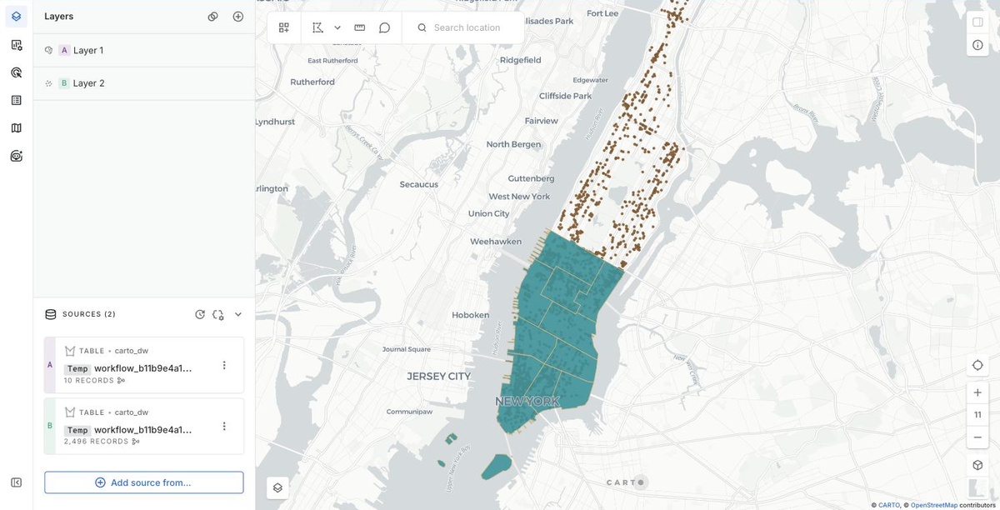
The map straight from the workflow: every precinct has the same color.
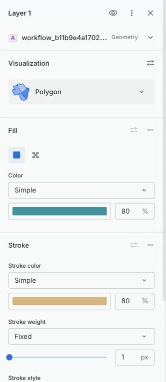
Before: Color is Simple.
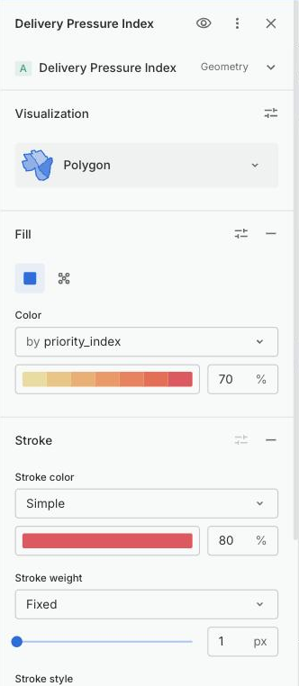
After: Color is by priority_index, yellow to red.
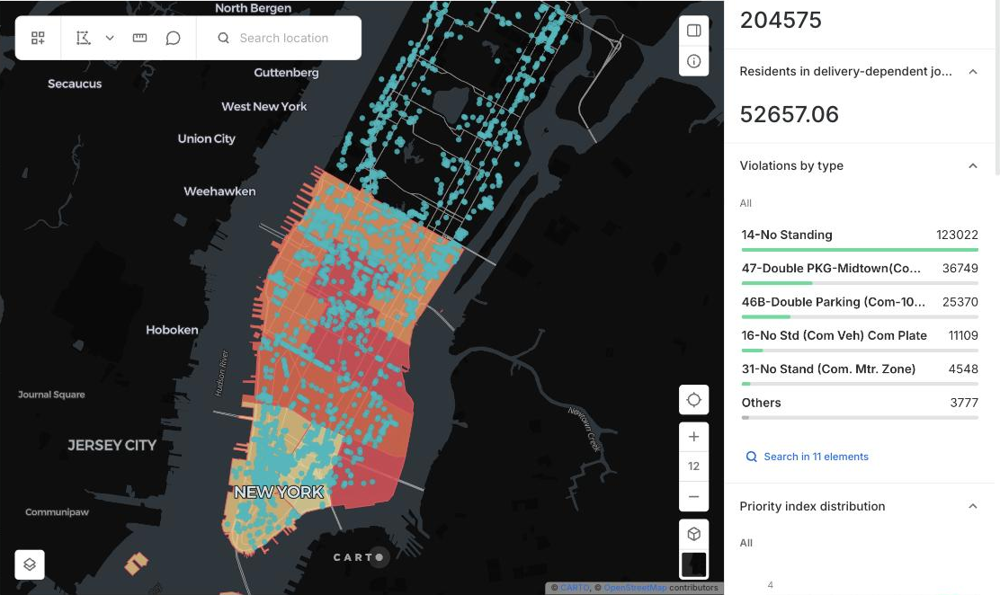
The styled map. Red precincts have the highest delivery pressure.
You should see
Precincts shaded from light yellow (low pressure) to red (high pressure).
Loading zones as small bright points, clustered where legal curb space exists.
A histogram that filters the map when you click a bar.
6
Add an AI agent
10 min
An AI agent lives inside the map. It can read your widgets and layers, answer questions, and filter the map for you. This needs CARTO AI to be enabled (step 0).
Assistant prompt
I am building an assistant for urban planners and logistics teams who explore last-mile delivery pressure in Manhattan below 60th Street. The map has one row per NYPD precinct with priority_index (0 to 100, higher means more pressure), violations, loading_supply, demand_per_1k and loading_per_1k. It should answer which precincts have the highest pressure, compare supply and demand, and use the map's widgets and filters to show its answers.
Starter questions (add them in the agent configuration, or just type them)
Which precincts have the highest delivery pressure?
Show me high-pressure precincts with few loading zones
What is driving the score in precinct 14?
How are tickets spread across violation types?
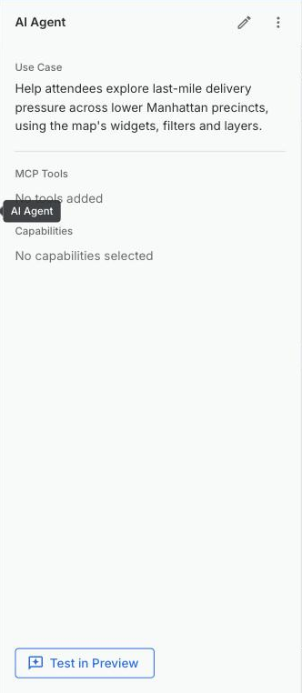
The AI Agent panel in the map editor.
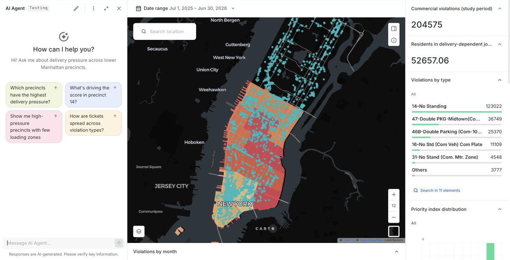
Test in Preview opens the chat with your starter questions.
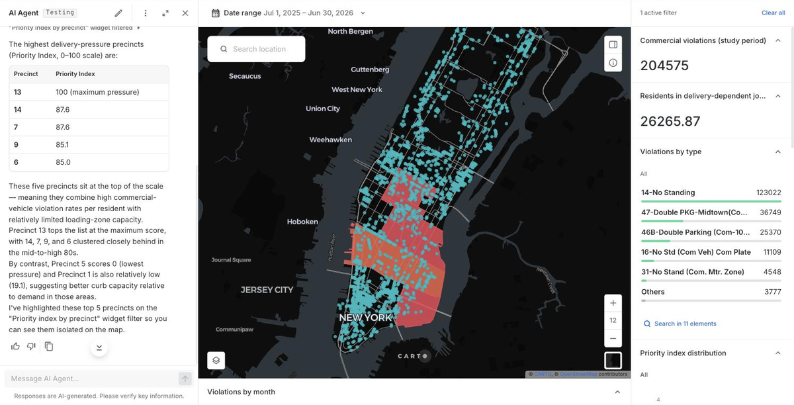
The agent ranks the precincts and filters the map to the top five.
You should seeA table with precinct 13 first, then 14, 7, 9 and 6, and the map filtered to those precincts. Your decimals may differ slightly from the screenshot. Answers take 30 to 70 seconds because the agent makes several tool calls.
If the agent says a widget timed out, open the widgets panel on the right side of the map (the Show widgets button) and ask again. Widgets only return data while they are visible.
Pressed Clear all and the map still shows only some precincts? Refresh the page. It is a display quirk, nothing is lost.
If you get stuck
I am behind or something is broken. How do I catch up?
Import 2_last_mile_COMPLETE.sql the same way as in step 1. It already contains all the nodes. Run it and carry on from step 5.
The run takes more than 5 minutes or seems frozen
The data is downloaded from GitHub the first time, which usually takes 1 to 2 minutes. If nothing moves after 5 minutes, check your internet connection, wait for the run to end or fail, then run once more. Avoid pressing Run repeatedly.
The Composite Score weights list is empty
The columns are only listed after the upstream nodes have run. Run the workflow once, then open the node again.
My ranking is different from the table
Check that: precinct is the key column in the Join, loading_per_1k is on Inverse, population, violations and loading_supply have weight 0, and the Variables date_from and date_to are back to their original values.
The map shows a source error
While a workflow runs, its tables are rebuilt and the map cannot read them. It recovers when the run finishes, and your styles and widgets are kept.
I cannot see the AI Agent icon, or the agent will not answer
Go back to step 0 and make sure Enable CARTO AI and AI Agents in Builder maps are on in Settings, CARTO AI, Configuration. Only an org admin can change this. If the agent answers with a model access error, choose another model in the agent configuration.
The import fails or I do not see CARTO Data Warehouse
Make sure you selected the CARTO Data Warehouse connection in the import dialog. If your org has no connections listed, ask the help desk to check your account.